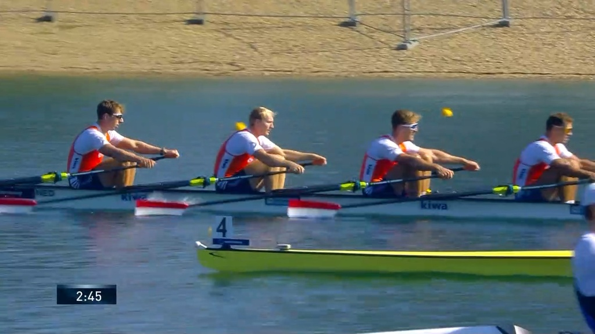
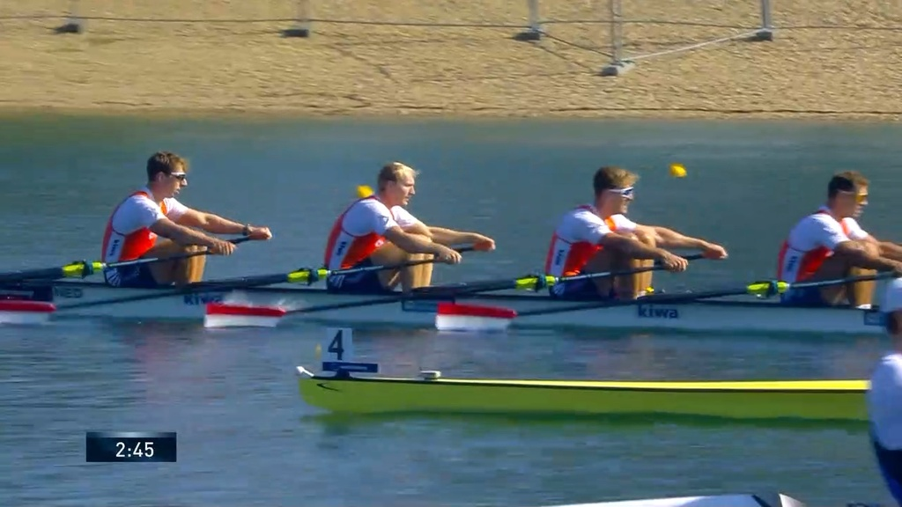

Some observation from a small piece of video that I took.
Compare the shoulders of Ben and Fernando during the drive and the finish:
It it slightly present in Andreas’s shoulders, too:

Compare against the Dutch 4x (maybe the best 4x in the world right now):
Why do we want shoulders to stay low? The muscle in the back that connects the hip with the arms is

and it works best when it stays flat. This is compromised when the shoulders come up. To avoid that happening it is important to engage it early - an engaged muscle prevent the shouldes from coming up. Think about keeping the elbows heavy or pulling the elbows slightly forward to make that happen.
Engaging the lats interacts slighly with the arms in the drive. We want to keep arms relaxed to avoid pulling with the arms using small arm muscles. The interaction is the reason many good rowers have a slighly bent arm - which is fine, as long as the situation is static and the small muscles are not used.


I suspect that Henrique is slighly pulling with the arms - which is tiring. We rather want to keep handles out and try to become lighter on the seat without conracting the arms. Compare with Andrea and Ben.
We want to sit tall at the catch such that we can lift from the seat when we are connected. Likewise, we don’t want any weight on the handles: if we lean onto the handles for stability, chances are the blade entry is slow and the body will open when the load comes on, to regain stability. Hence, we can only bring the body weight forward where we are still stable on the seat. I believe Henrique has a tendency to do that - but his so tall and has so much wing span that he doesn’t need to - length is gained from opening the arms. Compare body positions at the catch with the Dutch crew.
 

Observe the position of elbows (same height as hands) and hands (fairly flat) of the Dutch crew.